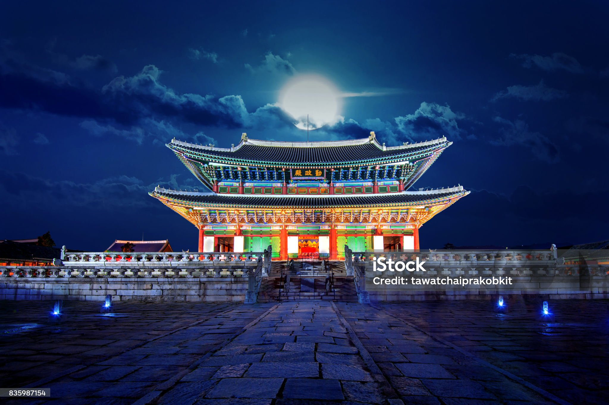
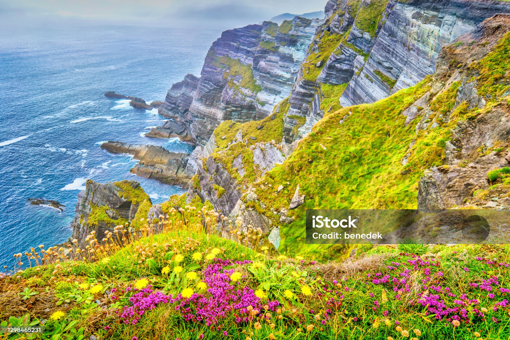

KOREAN
Korea (Korean romanized: Hanguk in South Korea, or Chosŏn in
North Korea) is a peninsular
region in East Asia consisting of the Korean Peninsula (한반도, Hanbando in South Korea,or
Chosŏnbando in North Korea), Jeju Island, and smaller islands. Since the end of World War II in
1945, it has been politically divided at or near the 38th parallel; in 1948, two states declared
independence, both claiming sovereignty over the entire region: North Korea (Democratic People's
Republic of Korea; DPRK) in its northern half and South Korea

SOUTH KOREAN
outh Korea,[c] officially the Republic of Korea (ROK),[d] is a country in
East Asia. It constitutes
the southern part of the Korean Peninsula and borders North Korea along the Korean Demilitarized
Zone; though it also claims the land border with China and Russia.[e] The country's western border
is formed by the Yellow Sea, while its eastern border is defined by the Sea of Japan. South Korea
claims to be the sole legitimate government of the entire peninsula and adjacent islands.

LANDSCAPE OF KOREAN
Korea comprises the Korean Peninsula (the mainland) and 3,960 nearby islands. The peninsula is
located in Northeast Asia, between China and Japan. To the northwest, the Amnok River (Yalu River)
separates Korea from China and to the northeast, the Duman River (Tumen River) separates Korea from
China and Russia. The Yellow Sea lies to the west, the East China Sea and Korea Strait to the south